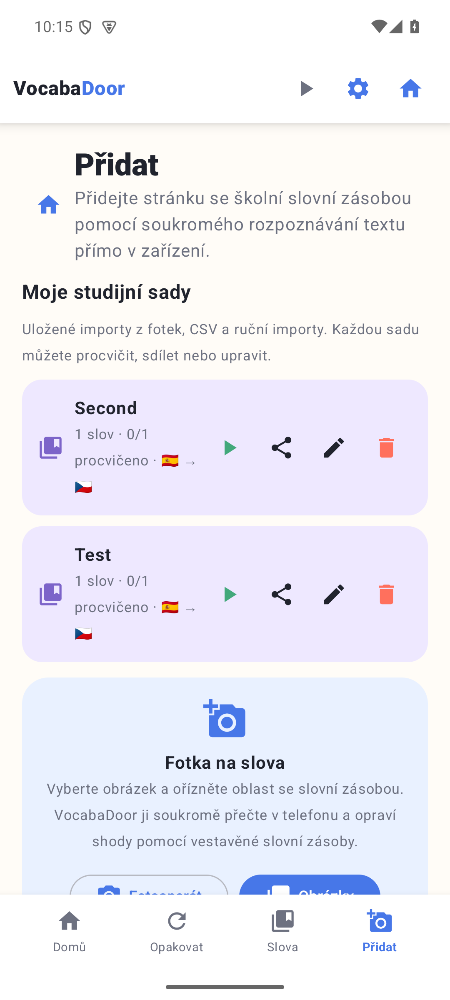

FUNGOVÁNÍ OFFLINESlova, která si
zapamatujete.VocabaDoor
zapamatujete.VocabaDoor

Produktový web / Aplikace pro Android
Procvičování slovíček bez připojení, s přehlednou dokumentací a bez analytického či sociálního sledování. Pět jazyků kurzů; rozhraní v angličtině, češtině a španělštině.